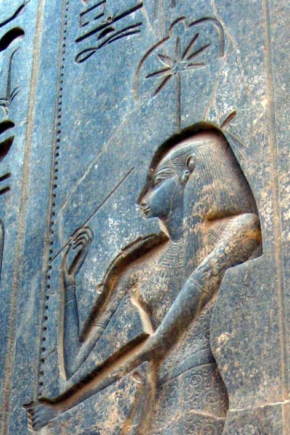

Когда Тот изобрёл письменность для людей, египтяне говорили: первым же словом, записанным на пальмовой кости, было имя, написанное Сешат. Она — богиня письма, счёта и царской летописи: покровительница писцов, хранительница анналов и «Владычица Дома Книг», где хранились свитки и папирусные списки. Её имя часто переводят как «та, что рассекает семь» — по семилучевой звезде её эмблемы, хотя точный смысл слова спорят до сих пор.
Её знак над головой — семилучевая звезда (или розетка), поставленная на пальмовую кость с насечками: счёт лет. Каждый год жизни царя — зарубка; Сешат вписывает их в список. Отсюда её роль — владычица времени и меры: где время считают, там она.
Изобретение письма
Жрецы спорили, кто дал людям письменность — Тот или Сешат. Спор решали так: письмо было изобретено обоими, но тот, кто начертал первую надпись, победил. «Тот записал на камень, а она — на пальмовую кость», — говорили в храмах, и кость оказалась раньше камня. В надписях Нового Царства Сешат прямо зовут «Госпожой Писания»: изобретение как таковое — её дар.
Натягивание шнура
Ни один храм не закладывали без Сешат. В обряде натягивания шнура царь вбивает колышек и натягивает мерную бечёвку, а Сешат держит палку-шнур (месхет) и указывает направление на север, по звёздам. Фараон как бы строит «на её слове», по её мерке: от точности меры зависит Маат всей постройки. Сцену можно видеть на стенах Дейр-эль-Бахри, Карнака и Рамессеума — царица Хатшепсут и цари Рамессидов под её началом закладывают стены.
Летопись и суд имён
При дворце Сешат — летописец: ежегодно вписывает царствование в анналы — «списки лет», по которым Египет помнил своё прошлое. В «Книге Мёртвых» она открывает врата неба и помогает праведнику войти в барку Ра, а в загробных текстах она «открывает врата неба» для праведника. Существовал и обряд проклятия врагов: их имена писали на сосудах, а Сешат — как богиня счёта — вела список приговорённых; сосуды били, имена стирали из числа живых. Так она же и хранительница имён, и изъявительница из.
Семь лучей
- Её эмблема — семилучевая звезда: лучи, возможно, «семь небесных врат» или счёт; до сих пор точное значение знака открыто обсуждают.
- Обряд натягивания шнура — та же операция, что и у римских жрецов-авгуров: разметка города и храма «по небу».
- В «Текстах Пирамид» Сешат «открывает врата неба» для царя — она же помогает душе подняться к звёздам.
- Женщины-писцы в Египте редки, но известны: считалось, что именно Сешат «даёт руку» писцу.
Сешат и Тот
Тот — покровитель мудрости, счёта и слова в его божественном начале; Сешат — то же в его прикладном, человеческом виде: письмо на папирусе, записи на остраконе, казначейские списки, точная мерка участка. Их пары не было в мифах — это два лика одного ремесла: знание и его запись. Писцы ставили обоих на свои табуреты: Тота звали «владыкой Книги», Сешат — «Госпожой Дома Книг».
Интересные факты
- Египетская «пальмовая летопись» фиксировала годы от основания — прообраз всех исторических хроник; Сешат — её богиня-покровитель.
- Её жреческий титул «Сешат» носили и живые женщины — жрицы редкого культа при фараоне
- Семь лучей звезды — редкий случай, когда египетский символ не имеет надёжной этимологии и спорит со временем.
- Имя Сешат носили женщины: «Сешат-неферт» — «Сешат прекрасна», имя-молитва о доле в знании.